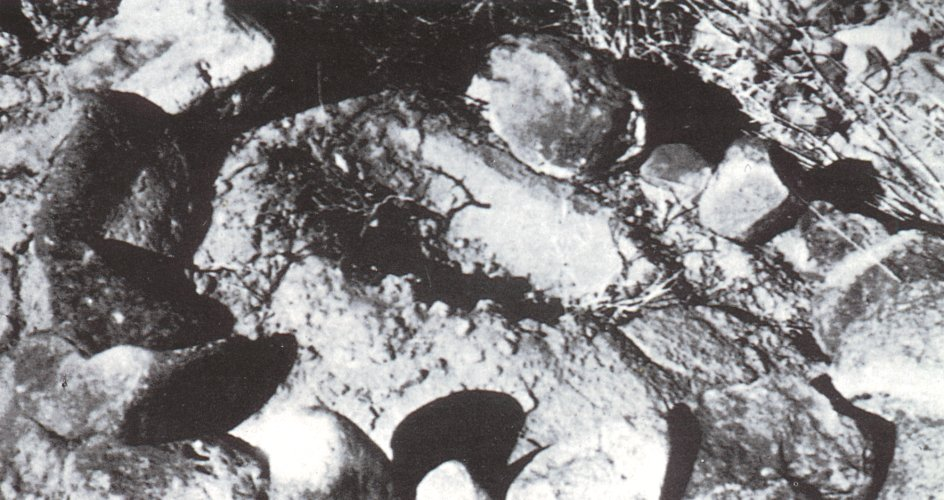

Le le jour de la rencontre de
Wilcox, Lonnie Zamora, sergent de police
de Soccorro (Nouveau-Mexique), pourchasse un chauffard. Il entend
soudain un rugissement et voit une flamme bleu-orange derrière une colline. Au sommet il lui semble voir à 200 m une
voiture accidentée et 2 hommes en combinaison blanche. Tout en s'approchant, il fait un appel radio signalant un
accident. Il voit maintenant l'objet à 30 m de distance, ovoïde vertical (horizontal ?), posé sur des sortes
d'"échasses dans un ravin. A côté, 2 petits êtres humanoïdes vêtus de blanc, voyant Zamora, remontent dans
l'appareil. Le vaisseau décolle aussitôt dans un vacarme assourdissant, en émettant une flamme bleue. Le policier a
cependant le temps de distinguer une étrange marque sur l'engin Une marque similaire
sera signalée à nouveau dans une RR3 de , par un
témoin fort suspect et se prétendant militaire, se faisant appeler "Joe". L'objet
survole la voiture à 6 m puis frôle à 4 m le dépôt de dynamite. Zamora croit qu'il va exploser et perd ses lunettes de
soleil en s'enfuyant. Il se met à l'abri de sa voiture, assiste au départ rapide à l'horizontale de l'engin.
Plusieurs autres personnes observent une flamme dans le ciel, dont une autre patrouille de policiers. Appellés par
radio, ils retrouvent des buissons en train de brûler (2 zones à carbonisation latérale, 2 à carbonisation verticale).
Le sergent Chavez arrivé sur les lieux trouve Zamora pâle et transpirant. Ils découvrent 4 trous dans le sol, sommets
d'un losange de diagonales de 6,40 m et 5,75 m.
La 1ère personne alertée est l'agent Burns du FBI, qui arrive sur les lieux, interroge brièvement Zamora
et examine les traces. Burns avertit à son tour le 1er lieutenant Hicks, officier en charge de l'USAF.
Vue artistique de l'observation de Zamora. Confusion possible avec un hélicoptère ?
Jim et Coral E. Lorenzen de l'APRO sont avertis. Ils se rendent sur les lieux et interrogent Zamora.
Pendant ce temps, Hicks avertit son supérieur, le capitaine Richard T. Holder, de la base de fusées de White Sands. Celui-ci arrive à son tour sur les lieux avec le sergent
Castle de la Police Militaire, et interroge à son tour Zamora. Il avertit ensuite le lieutenant-colonel Conkey de la
base de l'USAF de Holloman et lui et le major Mitchell vont
effectuer des mesures à Socorro. Pendant ce temps, W. P. est averti et Hector V. Quintanilla se prépare à se rendre sur les lieux, mais Josef Allen Hynek
fait un détour à la base USAF de Kirtland à Albuquerque puis se rend à Socorro (Hynek déclara à Vallée qu'il était
aussi attendu à Kirtland, mais Vallée décida de ne pas y aller).
De gauche à droite : Zamora, Burns du FBI, le major H. Mitchell (AFMDC), Coral Lorenzen (APRO) et le sergent Castle de la Police Militaire
Divers officiels seront apparemment gênés par leur présence sur les lieux : dans la documentation, le
lieutenant-colonel Conkey déclare qu'il n'était pas là, mais il est sur la photo. Le capitaine Holder également arrive
sur le site de l'atterrissage quelques minutes après l'alerte, mais fera supprimer son nom du rapport, arguant qu'il
était là à titre privé.
Ces traces, examinées par la police locale et un agent du FBI, ne seront jamais expliquées.
Tellement convaincu de n'avoir pas observé un objet construit par l'homme, Zamora demande à voir un prêtre avant de
faire sa déclaration aux autorités. Le cas est examiné dans le cadre de Blue Book [cas n° 8729 non résolu],
et pour la 1ère fois, l'USAF reconnaît n'avoir aucune explication "naturelle" à fournir. Ce cas est un de ceux qui
marque le plus Hynek qui enquête plusieurs jours pour essayer de trouver le moindre indice qui puisse jeter un doute
sur cette affaire. Il n'en trouve pas. Malgré cela, en accord avec le Pentagone, il dicte à Zamora une version éliminant le symbole
observé
(ci-contre) et la présence des humanoïdes en blanc.
Le rapport de Zamora :
Carte des lieux de l'observation
Socorro NM, _____, Officier DP Socorro depuis 5 ans, téléphone bureau 835-0941, maintenant décalé de .
A environ 17:45 le 24/4/64 à Socorro 2 Voitures de Police (6 4 Pontiac blanche) ont pris en chasse une voiture
depuis le côté ouest de Court House. La voiture semblait accélérer, et était à environ 3 blocs devant. Au niveau de
Old Rodeo Street (extension de Park St. sud) près de la résidence de George Morillo (à environ 1/8 mile au sud de
Spring Street, la voiture poursuivie _____ se dirigeait droit en direction des terrains de rodéo. La voiture
poursuivie était une nouvelle Chevrolet noire (cela pouvait être le garçon _____ d'environ dix-sept ans). La voiture
poursuivie était toujours 3 blocs devant. _____ était seul.
A ce moment j'entendis un rugissement et vit une flamme dans le ciel au sud-ouest à quelque distance — probablement
1/2 mile o u un mile. Il me vint à l'esprit qu'un entrepot de dynamite avait explosé dans cette zone, et je décidais
de laisser partir la voiture poursuivie.
La flamme était bleuâtre et d'une sorte d'orange également. Ne peut pas dire la taille de la flamme. Une flamme ne
semblant pas bouger, descendant doucement. Conduisait toujours la voiture et ne pouvait accorder trop d'attention à
la flamme. C'était une flamme de type étroit. C'était comme un "flux déversant" — de type entonnoir — plus resseré
au sommet qu'à la base. La flamme était peut-être 3 ° environ en largeur — pas large. La flamme était environ 2 fois
plus large à la base qu'au sommet, et environ 4 fois plus haute que que le sommet était large. Pas remarqué d'objet
au sommet, pas noté si le sommet de la flamme était plat. Le Soleil était à l'ouest et n'aidait pas à voir. Avait
des lunettes de soleil vertes par-dessus des verres correcteurs. Ne pu voir la base de la flamme car elle était
derrière la colline. Pas de fumée notée. Noté une sorte de "trouble" à la base--poussière ? Probablement du jour
venteux — le vent soufflait fort. Ciel ensolleillé sinon — juste quelques nuages
dispersés au-dessus de la région.
Le bruit était un rugissement, pas une explosion. Pas comme un jet. Changea de haute fréquence à basse fréquence
puis stoppa. Rugissement dura peut-être --allai en sa direction à ce moment sur la route
gravilloneuse difficile. Vu la flamme aussi longtemps qu'entendu le son. La flamme était de la même couleur autant
que je m'en souvienne. Le son changea distinctement de fort à faible jusqu'à sa disparition. Les deux fenêtres
étaient baissées. Pas d'autres spectateurs remarqués - pas de traffic à l'exception de la voiture devant--et la
voiture devant devait avoir entendu mais peut-être pas vu car la voiture était trop près de la colline en avant,
pour voir la flamme.
Après le rugissement et la flamme, n'a rien remarqué, en montant la colline quelque peu rude — ai du aller en
arrière puis réessayer à nouveau, 2 fois de plus. Arrivais à mi-chemin la première fois, les roues commencèrent à
déraper, le rugissement continuait, ai du redescendre en arrière et essayer 2 fois et secouer. En essayant la 3ᵉ
fois, pas de bruit ni de flamme notés.
Une fois au sommet, me déplaçait lentement sur la route gravilloneuse vers l'ouest. Ne remarquais rien pendant un
moment... peut-être durant ou , allait lentement, cherchant autour l'entrepot —
ne me souvenais pas exactement où était l'entrepot de dynamite.
Remarquais soudain un objet de type brillant au sud à environ 150 à 200 yards. Il était hors de la route. Au
premier regard, stoppa . Il avait l'air, tout d'abord, d'une voiture retournée. Pensa que des enfants l'avaient
retournée. Vit 2 personnes en combinaisons blanches très près de l'objet. Une de ces personnes sembla se retourner
et regarder droit ma voiture et sembla alarmée — sembla sauter rapidement ou quelque chose comme çà.
A ce moment je commençais à déplacer ma voiture vers eux rapidement, dans l'idée de les aider. Arrêtais au bout de
quelques secondes. L'objet était comme d'aluminum — il était blanchâtre sur le fond de la mesa, mais pas de chrome.
Semblait en forme de O et l'avait pris au premier regard pour une voiture blanche retournée. La voiture semblait
debout sur le radiateur ou sur le capot, lors de ce premier regard.
Le seul moment où je vit ces 2 personnes fut quand je m'étais arrêté, peut-être durant , pour
regarder l'objet. Je ne me souviens pas de quelque forme particulière ou de quelconques chapeaux, ou de couvre-chef.
Les personnes étaient de forme normale — mais peut-être étaient-elles de petits adultes ou de gros enfants.
Regardais ensuite la route en roulant vers la scène. Contacta le bureau du sheriff par radio "Socorro 2 à Socorro,
possible 10-44 (accident), je serai 10-6 (occupé) hors de la voiture, inspectant la voiture en bas dans le
contre-bas.
Arrêta la voiture, parlais toujours à la radio, commença à sortir, le micro tomba, retourna chercher le micro, puis
le replaça dans son support, sortis de la voiture pour descendre là où je pensais que l'objet (la voiture) était.
A peine avais-je contourné la voiture, que j'entendis un rugissement (n'était pas exactement une explosion),
rugissement très fort — à cette distance était vraiment très fort. Pas comme un avion à réaction — sait quel bruit
ils font. Commença rapidement à base fréquence, puis le rugissement monta de fréquence (ton plus aigü) et en volume
— de élevé à très élevé. Au moment même du rugissement vit une flamme. Une flamme sous l'objet. L'objet commençait à
monter — lentement. L'objet monta lentement à la verticale. La flamme était bleu ciel et à la base était d'une sorte
de couleur orange. Depuis cet angle, vit le côté de l'objet (pas l'extrémité, comme noté au début). Difficile de
décrire la flamme. Pensait, à partir du rugissement, qu'il pouvait exploser. La flamme pouvait provenir de dessous
l'objet, au milieu, probablement une zone de quatre pieds--supposition très approximative. Ne peut décrire plus la
flamme que bleu et orange. Pas de fumée, à l'exception de poussière dans la zone proche.
Dès que je vis la flamme et entendis le rugissement, je me tournais, courrais loin de l'objet mais tournais la tête
vers l'objet. Heurta la jambe sur la voiture — dans la zone du pare-chocs arrière. La voiture faisait face au
Sud-Ouest. Les lunettes tombèrent au sol, les laissa là. Courra au Nord--la voiture entre lui et l'objet.
L'objet était de forme ovale. Il était uniforme — pas de fenêtres ou de portes. Quand le rugissement commença, it
était encore sur ou près du sol. Nota une inscription en rouge d'un certain type (voir illustration). L'insigne
était d'environ 2 1/2' de haut et environ 2' de large je suppose. Etait au milieu de l'objet... L'objet toujours
comme d'aluminium blanc.
Après être tombé sur la voiture et les lunettes tombées, continua à courir vers le Nord, avec la voiture entre moi
et l'objet. Regarda en arrière quelques fois. Nota que l'objet montait au niveau de la voiture, environ 20 à 25
pieds je suppose — cela prit je suppose lorsque l'objet commença à s'élever et je regardais en
arrière. Je courru je suppose environ la moitié du chemin jusqu'à là où j'avais trébuché — c'est à environ 50 pieds
de la voiture que j'avais trébuché, juste au-dessus de la crête de la colline. Je suppose que j'ai courru environ 25
pieds lorsque je regardais en arrière et vit l'objet au niveau de la voiture et il apparu juste au-dessus de
l'endroit d'où il avait décollé.
Je continuais à courir et sautais juste au-dessus de la colline — Je m'arrêtais car je n'entendais pas le
rugissement. J'étais effrayé par le rugissement, et j'avais pensé continuer à courir jusqu'en bas de la colline. Je
me retournais vers l'objet et au même moment mettais ma tête vers le sol, couvrant mon visage avec mes bras. Etant
donné qu'il n'y avait pas de rugissement, je regardais en haut, et vit l'objet s'éloigner. Il ne se rapprochait pas
de moi. Il semblait aller tout droit et à la même hauteur -- peut-être 10 à 15 pieds du sol, et il évita l'abri à
dynamite d'environ 3 pieds [1 m] L'abri faisant lui-même plus ou moins 8 pieds de haut 2,5 m]. L'objet se déplaçait
très rapidement. Il sembla s'élever, et décolla immédiatement. L'objet se déplaçait très vite. Il sembla s'élever,
et décolla immédiatement à travers la campagne. Je couru à ma voiture et tout en courant, gardais un œil sur
l'objet. Je récupérais mes lunettes (j'avais laissé les lunettes de soleil sur le sol), entrais dans la voiture, et
appelais par radio Nep Lopez, l'opérateur radio, pour qu'il "regarde dehors par la fenêtre, pour voir s'il pouvait
voir un objet." Il me demanda "qu'est-ce que c'est ?" Je répondis "C'est comme un ballon." Je ne sais pas s'il l'a
vu. Si Nep a regardé dehors par sa fenêtre, qui donne au Nord, il n'a pas pu le voir. Je ne lui ai pas dit sur le
moment par quelle fenêtre regarder.

La trace présente sur les lieux de l'observation
Pendant que j'appelais Nep, je pouvais toujours voir l'objet. L'objet semblait monter doucement, et "devenir petit"
en s'éloignant rapidement. Il a semblé éviter de justesse le Canyon Box ou la Montagne du Canyon de Six Miles. Il a
disparu en passant par-dessus la montagne. Il n'avait pas de flamme ou quoi que ce soit d'autre lorsqu'il se
déplaçait au-dessus du sol, ni de fumée ou de bruit.
Me sentais en bonne santé. Les dernières boissons — 2 ou 3 bières — remontaient à plus d'un mois. Ne remarquais pas
d'odeurs . Ne remarquais pas d'autres sons que ceux décrits. Donnais ordre à Nep Lopez par radio et au Sergent M.S.
Chavez de venir ici. Descendais où l'objet s'était trouvé et je remarquais que les broussailles brûlaient en
plusieurs endroits. Au moment où j'entendis le Sgt. Chavez (Police d'État du N. M. à Socorro) me demander par radio
ma position, je retournais à ma voiture, lui dit qu'il me voyait. Alors le Sgt. Chavez arriva, me demandait quel
était le problème, parce que je transpirais et il me dit que j'étais blanc, très pâle. J'ai demandé au Sgt. de
regarder ce que j'avais vu, et que c'était les broussailles en feu. Alors le Sgt. Chavez et moi-même nous rendîmes à
l'endroit, et le Sgt. Chavez montra les traces.
Lorsque je vis l'objet pour la 1ère fois (lorsque je pensais qu'il devait s'agir d'une voiture) je vis ce qui
semblait être 2 sortes de pattes de l'objet au sol. A ce moment, je je prettais pas attention à ce que c'était — je
pensais qu'il s'agissait d'un accident — je vis les 2 personnes. Je ne prettais pas attention aux 2 "pattes" ? Les
deux "pattes" se situaient à la base de l'objet, inclinées vers l'extérieur jusqu'au sol. L'objet devait faire
environ 3 pieds 1/2 du sol à ce moment. J'y ai juste jetté un coup d'œil.
Ne peux dire combien de temps [j']ai vu l'objet la 2nde fois (le fois "rapprochée"), peut-être —
juste une suposition — du moment où je suis sorti de la voiture, ai jeté un œil à l'objet, ai couru depuis l'objet,
sauté par-dessus la colline, puis suis retourné à la voiture et appelé par radio alors que l'objet disparaissait.
Alors que mon micro était tombé pendant que je sortais de la voiture, sur la zone de la scène, j'ai entendu 2 ou 3
"thumps" forts, comme si quelqu'un donnait des coups de marteau ou fermait une porte ou des portes violemment. Ces
"thumps" étaient peut-être espacés de ou moins. Ce fut juste avant le rugissement. Les
personnes n'étaient pas visibles lorsque je conduisais vers la zone de la scène.
Juste avant que le Sgt. Chavez arrive sur le scène, je pris mon stylo et fit un dessin de l'insigne sur l'objet
Steiger: 1976, pp. 115-121.
Enquêtes
Examen des traces le 24 avril 1964 Mary Evans Picture Library 2007
De nombreuses explications différentes seront proposées pour expliquer cette rencontre. Lincoln Lapaz
proposera un appareil secret à décollage vertical "Says UFO Really
VTO Project of AF", Post-Standard, Syracuse (N.Y.), 3 mai 1964, d'autres un vol
d'hélicoptère documenté "The Socorro, NM UFO - Explained?", New
Mexicans for Science and Reason, le test du prototype à 3 pieds Surveyor envoyé depuis White Sands ce jour-là via un hélicoptère (mais entre , d'après le registre) Moseley, James: Saucer Smear, 2000-07-15 ou encore l'atterrissage
temporaire d'un ballon expérimental Huyghe, Patrick: "The
Best UFO Case Ever? A Review and Update of the Socorro Incident", The Anomalist n° 8, printemps 2000, pp. 113-136 - Présentation de témoignages corroborants ou non, de l'historique des enquêtes, et des différentes théories, notamment celle d'un ballon. Brève interview de Zamora revenant sur sa déclaration d'avoir vu des personnages..
Philip Julian Klass, lui, concluera qu'il ne s'agissait de rien de plus qu'une manœuvre
publicitaire du maire local qui, par une curieuse coïncidence, se révèle être propriétaire de la portion de terrain
sur laquelle l'ovni a laissé ses empreintes.
Canular ?
La lettre de Pauling à Colgate avec sa question manuscrite, et la réponse de Colgate en bas de page
Le , le Dr. Linus Pauling, intéressé par l'affaire, écrit à son collègue et am i le Dr.
Stirling Colgate - président de la New Mexico Tech - pour avoir d'éventuelles infos sur l'affaire. Colgate répond
sur la lettre en indiquant : J'ai une bonne idée de l'étudiant qui a mis en œuvre le canular.
L'étudiant est parti. Cheers, Stirling. Bragalia, Anthony: "The
Socorro UFO Hoax Exposed! (Famous 1964 sighting was a college prank)", InterAmerica, 2009-09-23.
Contacté par l'enquêteur Antonio Bragalia, Colgate confirme l'histoire, mais sans finalement donner plus de
détails.
Bragalia contacte par la suite le Dr. Frank T. Etscorn, professeur de psychologie à New Mexico Tech du milieu des
années 1970s au début des années 1990s, qui se souvient d'une étudiante qui travaille
sur l'affaire :
Comme projet, une ancienne étudiante à moi avait examiné le cas au milieu des années 1980s. En utilisant des
almanachs et des réseaux, elle commença à appeler des anciens qui étaient à Tech en 1964. Elle finit par
retrouver un des anciens étudiants dont on pensait qu'il avait été impliqué. Il ne voulut pas s'étendre sur le
canular ou que son nom soit utilisé - mais elle découvrit que c'était un canular. Mes souvenirs de son enquête sont décousus - c'était il y a 25 ans. Mais je
me souviens qu'il découvrit aussi dans des archives qu'au même moment un appareil de rétro-projection avait été
volé sur le campus le jour de l'observation d'ovni.
Références :
Lorenzen, C. E.: Flying saucers: The Startling Evidence of the Invasion from Outer Space. New York:
Signet, 1966.
Olsen, Thomas M. (ed): The Reference for Outstanding UFO Reports. Riderwood, Maryland: UFO Information
Retrieval Center, Novembre 1966.
Powers, William T.: "The Landing at Socorro," The Humanoids ,
Charles Bowen (ed), London: Futura, 1974.
Quintanilla, H.: "Project Blue Book's Last Years," The Anomalist: 4, automne 1966.
Quintanilla, H.: "The Investigation of UFO's," Studies in Intelligence, vol. 10, n° 4, automne 1966.
Larry Robinson, "Solving the 1964 Socorro NM UFO Case," https://php.indiana/edu/~lrobins/howisoco.htm.
Stanford, Raymond D.: Socorro 'Saucer' in a Pentagon Pantry, Austin:
Blueapple Books, 1976.
Steiger, B. (ed): Project Blue Book. New York: Ballantine 1976. OVNI:
le projet Blue Book, Belfond 1979, pp. 88-101